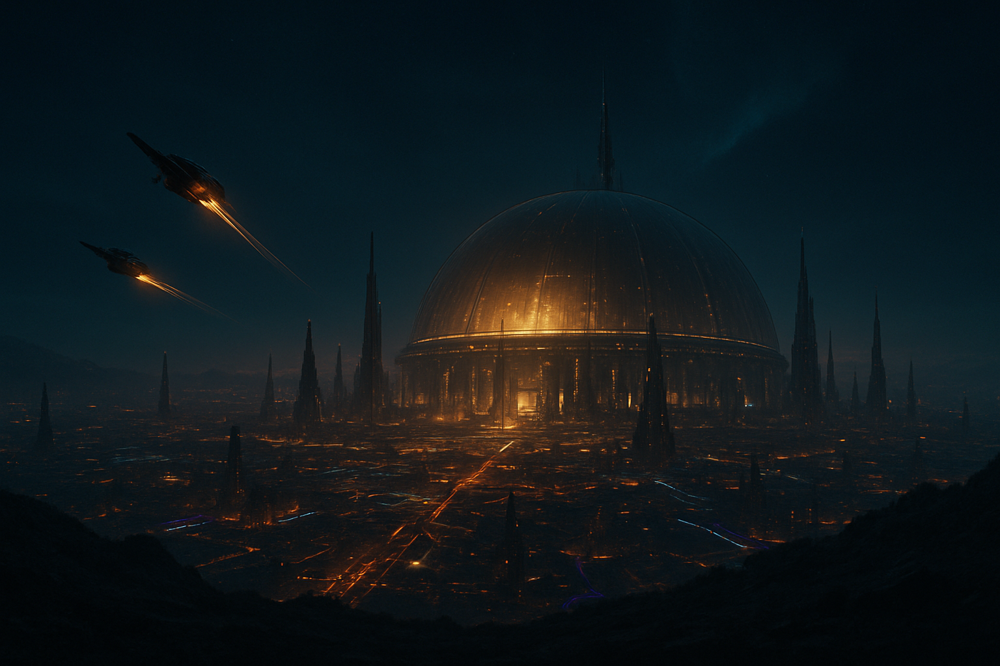
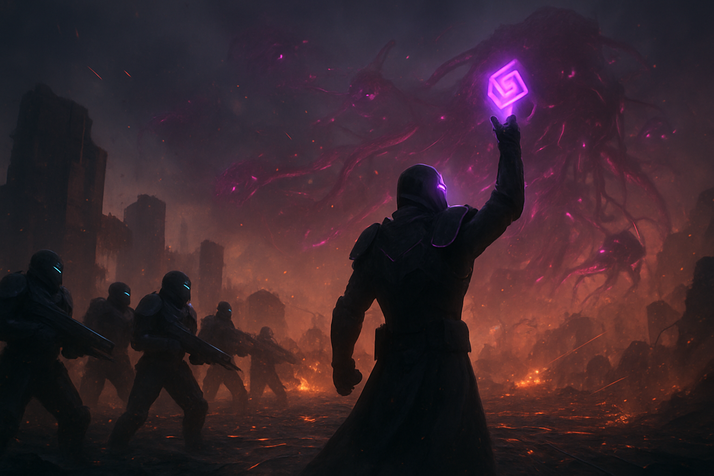
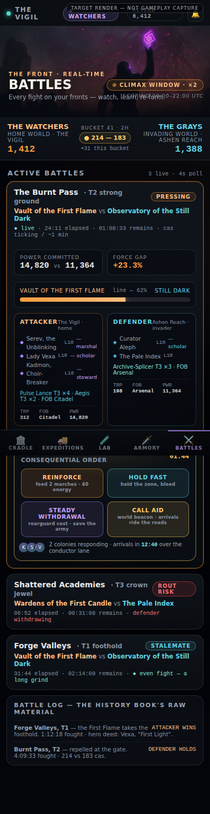
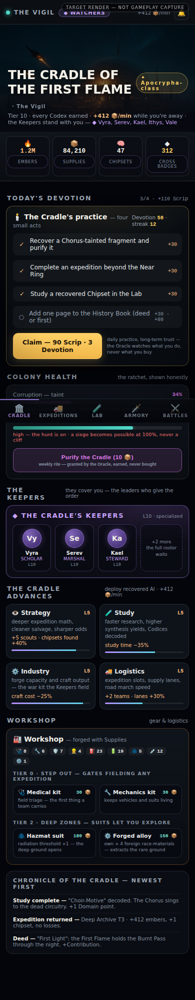
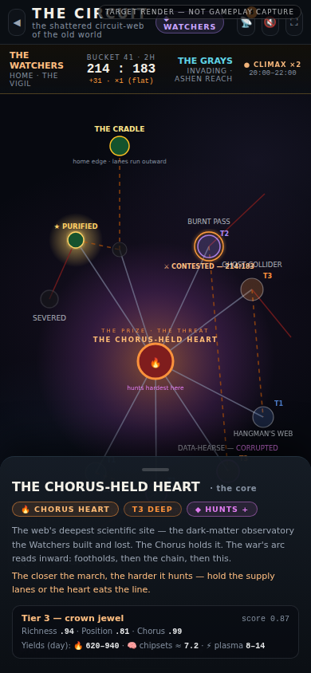
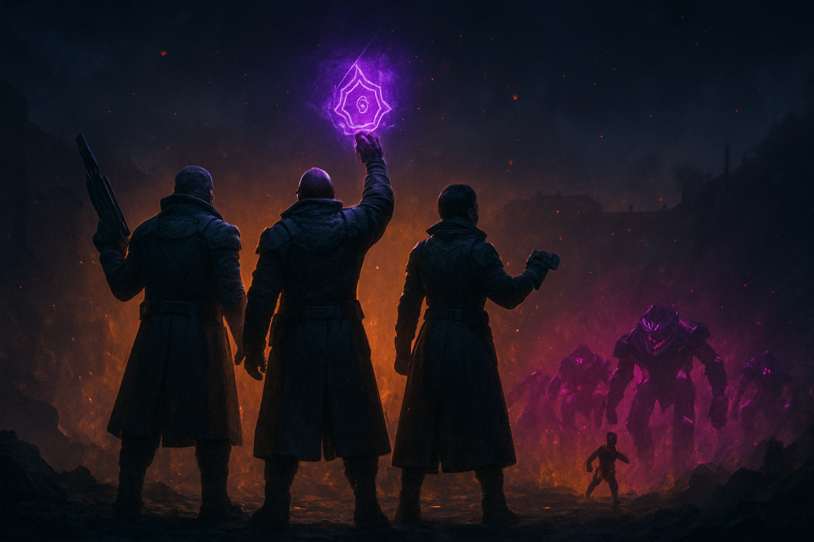
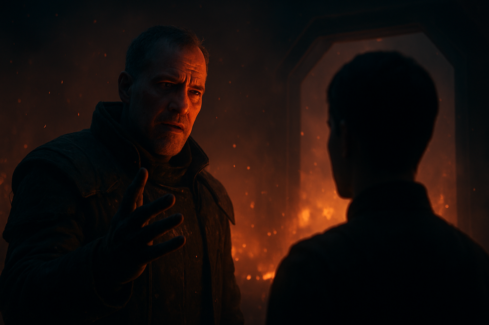
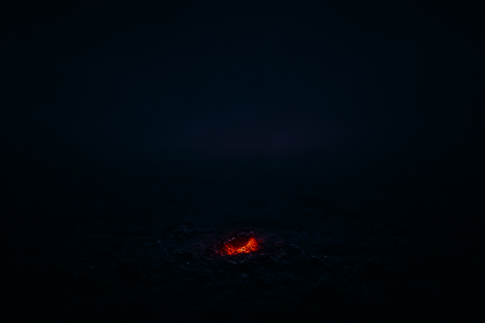
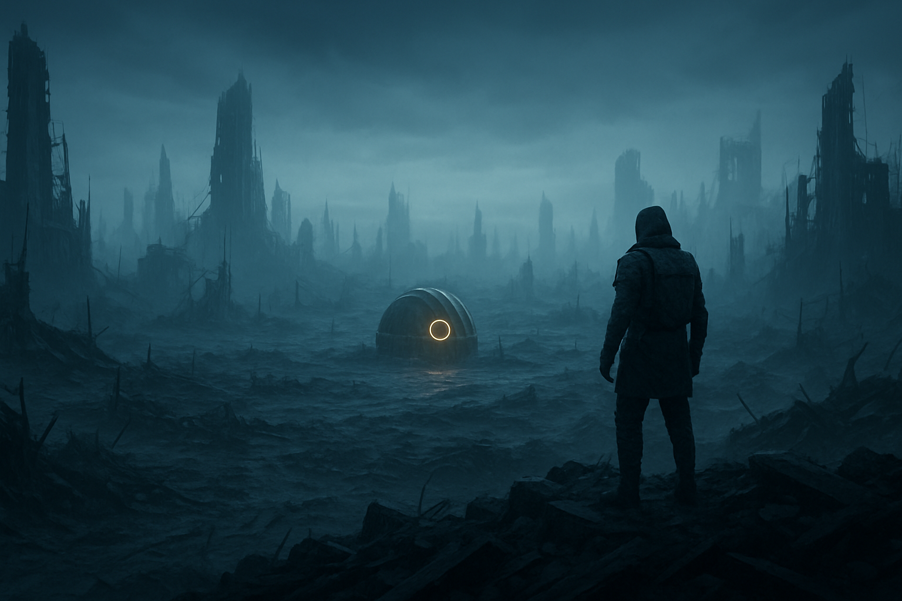

Six key stills, three UI mockups at the epic bar, and a shot-by-shot beat sheet — one locked art direction the whole game must hold. This page is the style bible viewer: every frame is a target, not a capture.
Target render — not gameplay captureA dead circuit-world, lit only by meaning — near-black blue-slate surfaces; every light on screen is a statement: ember-orange is human effort, magenta is the Chorus's grip, gold is the Cradle / Oracle / the return, and the six race accents color identity alone. The canon mood system (Blacksite Terminal base + Aurora Conduit layer + Foundry Amber as the ember/return state) taken to cinematic intensity.
Canon tokens, verbatim (app.css/circuit-tokens.ts). Functional colors are global; race accents are identity; the two never cross.
Motivated light in a dead world — every light means something. Volume, haze, ember particulates, filmic S-curve, vignette.
Three acts, one arc: triumphant (Height) → solemn & inevitable (Fall) → quiet, one gold spark (Wake). The Chorus is never beautiful.
Full power. The colony at its peak — alive, blazing, about to be everything. Music: driving, upbeat, "pump the heart".


Real layouts, real components, real tokens — plus hero bands, war presence, the Keepers seam, and the decision window as stage. Sources: mockups/mockup-battles.html · mockup-colony.html · mockup-circuit.html (each self-contained, opens from the repo).



The Chorus overwhelms. The Keepers cover the player's escape; the player becomes the witness. Music: the theme inverts — same drive, minor, closing in.


Goes dark — then the reveal: the war-torn world and one Cradle. Silence first; the ember motif returns. This is the real game's true opening shot.

